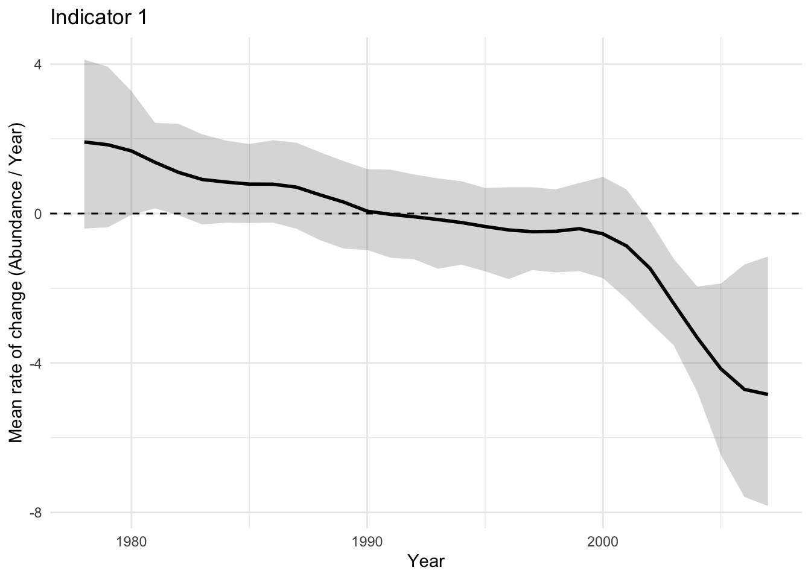
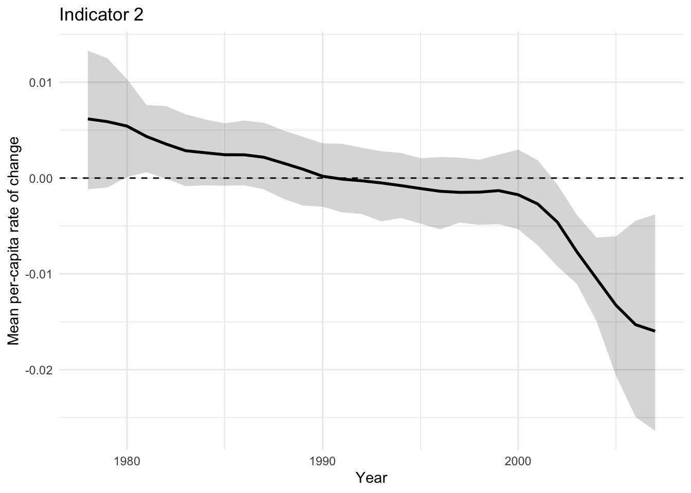
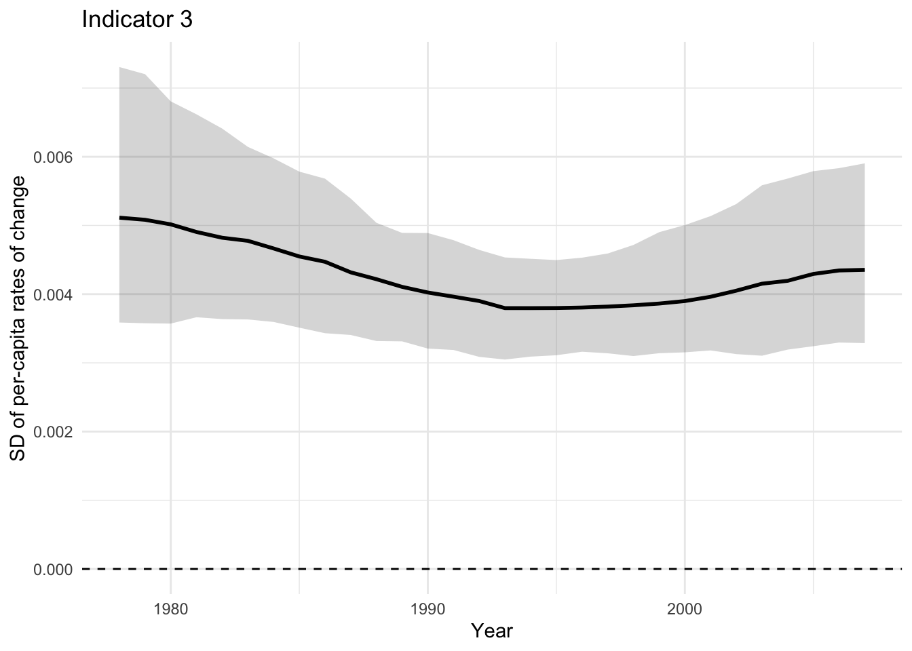
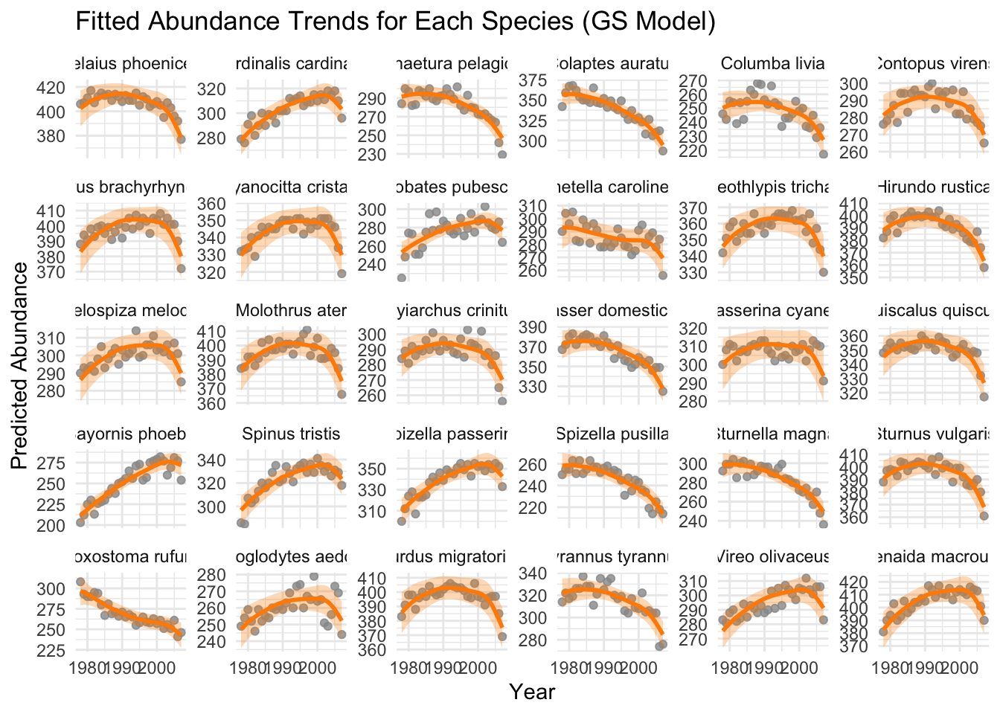
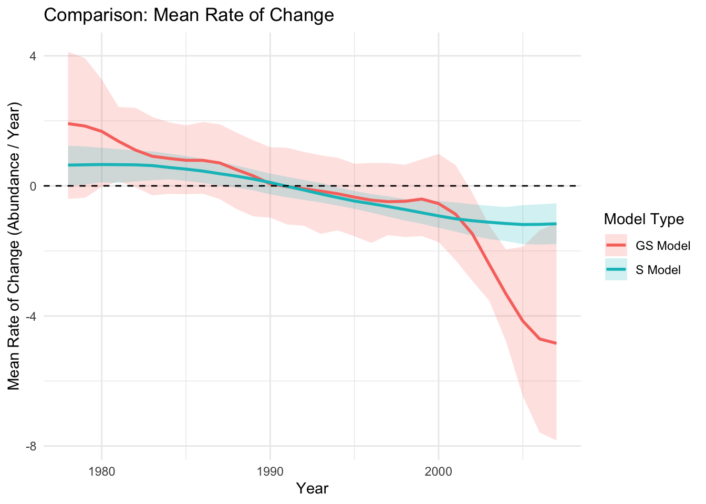
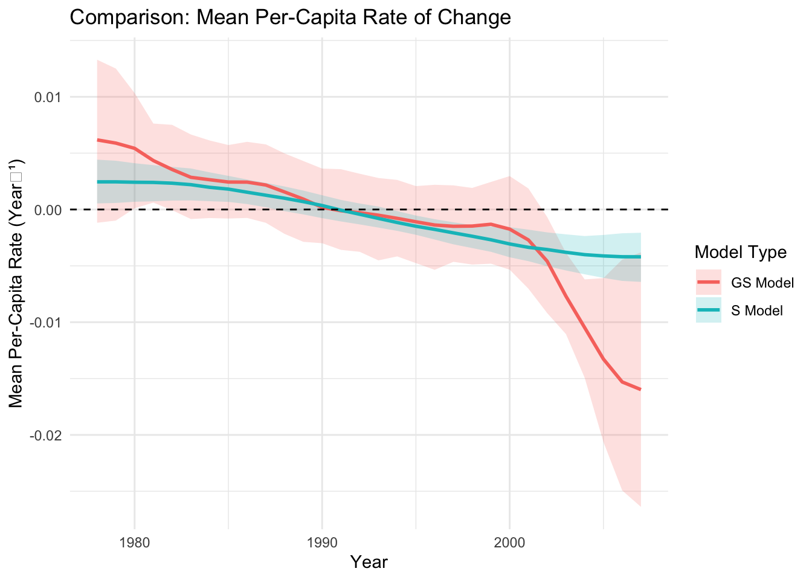
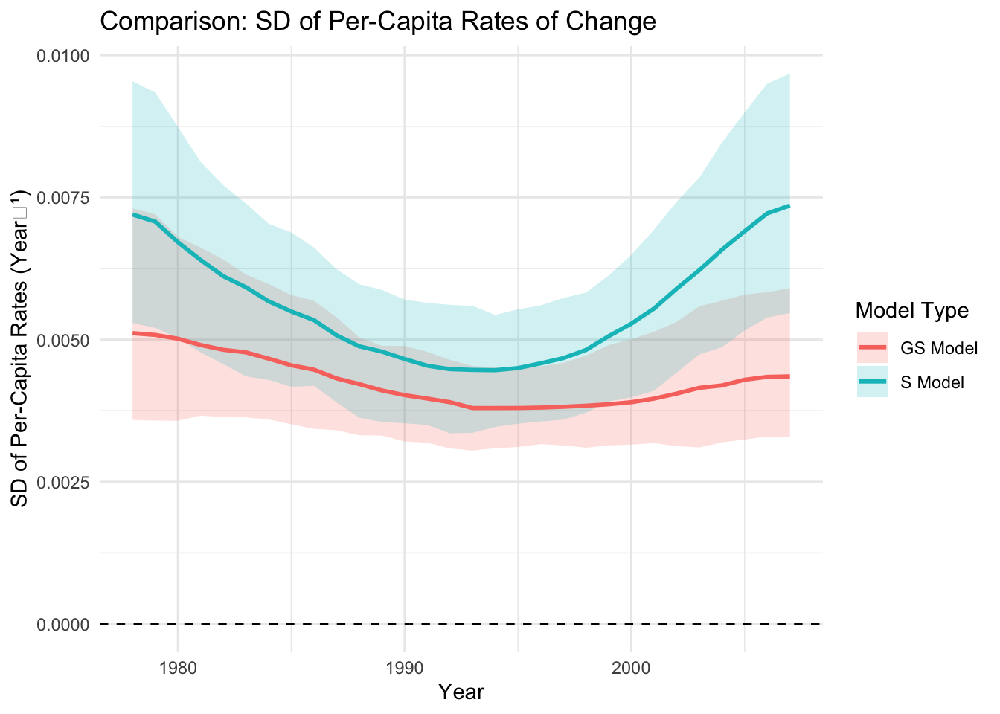

This document provides the detailed code corresponding to the Trends section of the paper “Levelling up: How to unlock ecological data with hierarchical generalized additive models”. It illustrates how to fit Hierarchical Generalized Additive Models (HGAMs), specifically the “GS” model from Pedersen et al. (2019), to a multi-species dataset in order to plot temporal trends and compute derivative-based indicators.
This script serves as a more complete version of the coding example presented in Box 1. For additional details on trend estimation in HGAMs, please refer to the main article.
Data
We use the North American Breeding Bird Survey dataset extracted from BioTIME (Pardieck et al., 2015), a long-term monitoring program of North American bird populations that began in 1966. Our analyses focus on a subset of the data collected near Waverly, New York (44.55, -74.4833) between 1978 and 2007, which includes 35 bird species. In this section, we specifically use the 30 most abundant species (Table 1), as our objective is to detect potential regime shifts and tipping points within the bird community, which requires including a larger number of species.
Table 1. Species included in the analyses and figures presented in this script.
Common name
Species name
Red-winged blackbird
Agelaius phoeniceus
Northern cardinal
Cardinalis cardinalis
Chimney swift
Chaetura pelagica
Northern flicker
Colaptes auratus
Rock pigeon
Columba livia
Eastern wood-pewee
Contopus virens
American crow
Corvus brachyrhynchos
Blue jay
Cyanocitta cristata
Downy woodpecker
Dryobates pubescens
Gray catbird
Dumetella carolinensis
Common yellowthroat
Geothlypis trichas
Barn swallow
Hirundo rustica
Song sparrow
Melospiza melodia
Brown-headed cowbird
Molothrus ater
Great crested flycatcher
Myiarchus crinitus
House sparrow
Passer domesticus
Indigo bunting
Passerina cyanea
Common grackle
Quiscalus quiscula
Eastern phoebe
Sayornis phoebe
American Goldfinch
Spinus tristis
Chipping sparrow
Spizella passerina
Field sparrow
Spizella pusilla
Eastern meadowlark
Sturnella magna
Common starling
Sturnus vulgaris
Brown trasher
Toxostoma rufum
Northern house wren
Troglodytes aedon
American robin
Turdus migratorius
Eastern kingbird
Tyrannus tyrannus
Red-eyed vireo
Vireo olivaceus
Mourning dove
Zenaida macroura
Derivative-based indicators
HGAMs offer an indicator-based approach using nonparametric spatiotemporal regression models to identify periods of change in community abundance or composition (i.e., regime shifts). This method estimates three key indicators: 1) the mean rate of change across all species, 2) the mean per-capita rate of change, and 3) the standard deviation of per-capita rates of change (Pedersen et al., 2020).
The mean rate of change across all species
This indicator represents the average temporal rate of change in abundance across all species in the community. It provides a general measure of whether the community as a whole is increasing or decreasing in total abundance over time.
The mean per-capita rate of change
This indicator expresses the average rate of change per individual, capturing the community’s relative growth or decline independently of overall abundance. It is analogous to the population growth rate at the individual level and reflects how efficiently individuals contribute to population change through time.
The standard deviation of per-capita rates of change
This indicator quantifies the variability in per-capita rates of change among species. High values suggest that species respond differently to environmental or ecological drivers, indicating potential desynchronization or restructuring within the community, which can signal the onset of regime shifts.
References
Pardieck, K. L., Ziolkowski Jr., D. J., and Hudson, M. A. R. (2015). North American Breeding Bird Survey Dataset 1966 - 2014, version 2014.0. https://biotime.st-andrews.ac.uk/selectStudy.php?study=195
Pedersen, E. J., Miller, D. L., Simpson, G. L., & Ross, N. (2019). Hierarchical generalized additive models in ecology: an introduction with mgcv. PeerJ, 7, e6876.
Pedersen, E. J., Koen-Alonso, M., & Tunney, T. D. (2020). Detecting regime shifts in communities using estimated rates of change. ICES Journal of Marine Science, 77(4), 1546-1555.
Trends Coding Example
Step 1: Packages and Libraries
Here, we install and load the packages required for this coding example.
# install.packages(c("mgcv", "dplyr", "ggplot2", "tidyr", "mvtnorm", "here", "gratia", "gridExtra"))library(mgcv) # For fitting Generalized Additive Models (GAMs) and Hierarchical GAMs
Loading required package: nlme
This is mgcv 1.9-1. For overview type 'help("mgcv-package")'.
library(dplyr) # For data manipulation
Attaching package: 'dplyr'
The following object is masked from 'package:nlme':
collapse
The following objects are masked from 'package:stats':
filter, lag
The following objects are masked from 'package:base':
intersect, setdiff, setequal, union
library(ggplot2) # For data visualization
Warning: package 'ggplot2' was built under R version 4.4.1
library(tidyr) # For reshaping and tidying datalibrary(mvtnorm) # For working with multivariate normal and t-distributionslibrary(here) # For handling file paths relative to the project root
here() starts at /Users/camillelevesque/Desktop/Maîtrise/GitHub/HGAMs_WG
library(gratia) # For visualizing and interpreting GAMs fitted with mgcvlibrary(gridExtra) # For arranging multiple ggplot2 plots into grids
Attaching package: 'gridExtra'
The following object is masked from 'package:dplyr':
combine
Step 2: Import and Process the data
Here, we import and process the dataset that has already been cleaned. The cleaning step involved subsetting the Breeding Bird Survey (BBS) data and retaining species sampled between 1978 and 2007. This preprocessing was performed in the script “clean-bbs-data.R”, located in the “data_cleaning” folder of the “HGAMs_WG” R project.
We then process the data further by selecting the 30 most abundant species for the analyses.
setwd("/Users/camillelevesque/Desktop/Maîtrise/GitHub/HGAMs_WG")# Loading the datasetdata_195 <-read.csv("data/clean/data_195.csv") # This is the cleaned data # Aggregating biomass data to get a yearly abundance for each species.community_ts <- data_195 %>%filter(!is.na(YEAR) &!is.na(valid_name) & valid_name !="") %>%group_by(YEAR, valid_name) %>%summarise(ABUNDANCE =n(), .groups ='drop') %>%rename(year = YEAR, species = valid_name, abundance = ABUNDANCE)# Selecting the top 30 most frequently observed species (i.e., highest in abundance)top_species <- community_ts %>%group_by(species) %>%summarise(total_abundance =sum(abundance)) %>%arrange(desc(total_abundance)) %>%slice_head(n =30) %>%pull(species)community_ts_subset <- community_ts %>%filter(species %in% top_species) %>%mutate(species =as.factor(species))print(head(community_ts_subset)) # The subset of data we will you from this point on in this script
# A tibble: 6 × 3
year species abundance
<int> <fct> <int>
1 1978 Agelaius phoeniceus 406
2 1978 Cardinalis cardinalis 279
3 1978 Chaetura pelagica 284
4 1978 Colaptes auratus 342
5 1978 Columba livia 246
6 1978 Contopus virens 276
Step 3: Fit Model GS (poisson)
Here, we fit the “GS” model described in Pedersen et al. (2019). Since the response variable represents abundance (count) data, we use the Poisson family.
# MODEL: The 'GS' Model (Global smooth + species-specific deviations)gam_model_GS <-gam(# Global relationship abundance ~s(year, bs ="tp") +# Species-specific smoother: a factor-smoother interaction of year and speciess(year, by = species, bs ="fs") +# Species as random effects (gives an intercept per species)s(species, bs="re"), # Datadata = community_ts_subset,# Distribution family: Poisson for count datafamily =poisson(), # Estimating smoothing parameters using restricted maximum likelihood (REML)method ="REML")
Step 4: Derivatives and Indicators
In this section, we generate predictions and calculate community-level indicators from the fitted GS model. We first create a prediction dataset covering all species and years, and use a small value (ε) to approximate derivatives numerically. We then draw 250 posterior simulations from the model coefficients to account for parameter uncertainty. Using these simulations, we compute predicted abundances and their first derivatives, which are used to estimate per capita rates of change. Finally, we summarize these results to obtain three community indicators for each year: the mean rate of change, the mean per capita rate of change, and the standard deviation of per capita rates of change, along with their median and 95% confidence intervals.
# Create a prediction datasetpredict_data <- community_ts_subset %>%select(year, species) %>%distinct()# Define a small number 'eps' for numerical differentiationeps <-1e-7predict_data_p_eps <- predict_data %>%mutate(year = year + eps)predict_data_m_eps <- predict_data %>%mutate(year = year - eps)# Generate posterior simulations from the GS modeln_sim <-250set.seed(42)sim_lp_GS <-predict(gam_model_GS, newdata = predict_data, type ="lpmatrix")sim_coef_GS <-rmvnorm(n_sim, coef(gam_model_GS), vcov(gam_model_GS, unconditional =TRUE))# Calculate predicted values and derivatives for the GS modelpred_original_GS <-exp(sim_lp_GS %*%t(sim_coef_GS))pred_p_eps_GS <-exp(predict(gam_model_GS, newdata = predict_data_p_eps, type ="lpmatrix") %*%t(sim_coef_GS))pred_m_eps_GS <-exp(predict(gam_model_GS, newdata = predict_data_m_eps, type ="lpmatrix") %*%t(sim_coef_GS))first_derivative_GS <- (pred_p_eps_GS - pred_m_eps_GS) / (2* eps)per_capita_rate_GS <- first_derivative_GS / (pred_original_GS +1e-9)# Reshape simulation results for the GS modelsim_deriv_long_GS <-as.data.frame(first_derivative_GS) %>%mutate(row =1:n()) %>%pivot_longer(-row, names_to ="sim_id", values_to ="derivative")sim_per_capita_long_GS <-as.data.frame(per_capita_rate_GS) %>%mutate(row =1:n()) %>%pivot_longer(-row, names_to ="sim_id", values_to ="per_capita_rate")sim_results_GS <- predict_data %>%mutate(row =1:n()) %>%left_join(sim_deriv_long_GS, by ="row") %>%left_join(sim_per_capita_long_GS, by =c("row", "sim_id"))# Calculate community indicators for the GS modelcommunity_indicators_GS <- sim_results_GS %>%group_by(year, sim_id) %>%summarise(mean_rate_of_change =mean(derivative, na.rm =TRUE),mean_per_capita_rate =mean(per_capita_rate, na.rm =TRUE),sd_per_capita_rate =sd(per_capita_rate, na.rm =TRUE),.groups ='drop' )# Final summary of indicators for the GS modelfinal_indicators_GS <- community_indicators_GS %>%group_by(year) %>%summarise(across(.cols =c(mean_rate_of_change, mean_per_capita_rate, sd_per_capita_rate),.fns =list(median =~median(.x, na.rm =TRUE),lower_ci =~quantile(.x, 0.025, na.rm =TRUE),upper_ci =~quantile(.x, 0.975, na.rm =TRUE) ),.names ="{.col}_{.fn}" ),.groups ='drop' ) %>%mutate(model_type ="GS Model") # Add a label for plottingprint("--- Indicators from GS Model ---")
Here, we plot the three derivative-based indicators (mean rate of change, mean per capita rate, and the standard deviation of per capita rates) across years.
# Plot 1: Mean Rate of Change plot1_mean_rof <-ggplot(final_indicators_GS, aes(x = year)) +geom_ribbon(aes(ymin = mean_rate_of_change_lower_ci, ymax = mean_rate_of_change_upper_ci), alpha =0.2) +geom_line(aes(y = mean_rate_of_change_median), linewidth =1) +geom_hline(yintercept =0, linetype ="dashed") +labs(title ="Indicator 1",y ="Mean rate of change (Abundance / Year)", x ="Year", ) +theme(plot.title =element_text(size =14, face ="bold", hjust =0.5)) +theme_minimal()# Plot 2: Mean Per-Capita Rate of Change plot2_mean_percap_rof <-ggplot(final_indicators_GS, aes(x = year)) +geom_ribbon(aes(ymin = mean_per_capita_rate_lower_ci, ymax = mean_per_capita_rate_upper_ci), alpha =0.2) +geom_line(aes(y = mean_per_capita_rate_median), linewidth =1) +geom_hline(yintercept =0, linetype ="dashed") +labs(title ="Indicator 2",y ="Mean per-capita rate of change", x ="Year", ) +theme(plot.title =element_text(size =14, face ="bold", hjust =0.5)) +theme_minimal()# Plot 3: SD of Per-Capita Rates plot3_SD_percap_rof <-ggplot(final_indicators_GS, aes(x = year)) +geom_ribbon(aes(ymin = sd_per_capita_rate_lower_ci, ymax = sd_per_capita_rate_upper_ci), alpha =0.2) +geom_line(aes(y = sd_per_capita_rate_median), linewidth =1) +geom_hline(yintercept =0, linetype ="dashed") +labs(title ="Indicator 3",y ="SD of per-capita rates of change", x ="Year", ) +theme(plot.title =element_text(size =14, face ="bold", hjust =0.5)) +theme_minimal()# Print the plotsprint(plot1_mean_rof)

print(plot2_mean_percap_rof)

print(plot3_SD_percap_rof)

Step 7: Making a figure with the plots of indicators
Here, we create the figure that displays the three derivative-based indicators. This figure corresponds to Box 1 in the paper (i.e., Figure 2).
TableGrob (1 x 3) "arrange": 3 grobs
z cells name grob
1 1 (1-1,1-1) arrange gtable[layout]
2 2 (1-1,2-2) arrange gtable[layout]
3 3 (1-1,3-3) arrange gtable[layout]
Additional material
Here, we present additional code developed for the Trends section of the paper, which was not used directly in the final version of the manuscript.
Plotting the species-specific trends from the GS Model
Here, we plot the species-specific trends estimated from the GS model.
# Get predictions from the GS modelpreds_GS <-predict(gam_model_GS, newdata = predict_data, type ="response", se.fit =TRUE)plot_data_GS <- predict_data %>%mutate(fit = preds_GS$fit,se = preds_GS$se.fit,lower_ci = fit -1.96* se,upper_ci = fit +1.96* se ) %>%left_join(community_ts_subset, by =c("year", "species"))# Plot trends from GS modelspecies_trends_plot_GS <-ggplot(plot_data_GS, aes(x = year)) +geom_point(aes(y = abundance), color ="grey60", alpha =0.8) +geom_ribbon(aes(ymin = lower_ci, ymax = upper_ci), fill ="darkorange", alpha =0.3) +geom_line(aes(y = fit), color ="darkorange", size =1) +facet_wrap(~ species, scales ="free_y") +labs(title ="Fitted Abundance Trends for Each Species (GS Model)",y ="Predicted Abundance", x ="Year" ) +theme_minimal()
Warning: Using `size` aesthetic for lines was deprecated in ggplot2 3.4.0.
ℹ Please use `linewidth` instead.
print(species_trends_plot_GS)

Fitting Model “S” and comparing with Model “GS”
Before selecting the GS model as the main example in the Box 1 of the article, we also fitted the S model (Pedersen et al., 2019) and compared the performance of the two models.
The code used for this comparison is provided below.
Step 1: Fit Model “S” (poisson)
Here, we fit the model using the same data subset that was previously used for the GS model. Since the response variable represents abundance (count) data, we use the Poisson family.
# The 'S' Model (Separate smooths for each species)gam_model_S <-gam( abundance ~ species +s(year, by = species, bs ="fs") +# Species-specific smoother: a factor-smoother interaction of year and speciess(species, bs ="re"), # Species as random effects (gives an intercept per species)data = community_ts_subset,family =poisson(), # Using Poisson familymethod ="REML")
Step 2: Derivatives and Indicators (model S)
In this section, we generate predictions and calculate community-level indicators from the fitted S model. We first create a prediction dataset covering all species and years, and use a small value (ε) to approximate derivatives numerically. We then draw 250 posterior simulations from the model coefficients to account for parameter uncertainty. Using these simulations, we compute predicted abundances and their first derivatives, which are used to estimate per capita rates of change. Finally, we summarize these results to obtain three community indicators for each year: the mean rate of change, the mean per capita rate of change, and the standard deviation of per capita rates of change, along with their median and 95% confidence intervals.
# Create a prediction datasetpredict_data <- community_ts_subset %>%select(year, species) %>%distinct()# Define a small number 'eps' for numerical differentiationeps <-1e-7predict_data_p_eps <- predict_data %>%mutate(year = year + eps)predict_data_m_eps <- predict_data %>%mutate(year = year - eps)# Generate posterior simulations from the S modeln_sim <-250set.seed(42)sim_lp_S <-predict(gam_model_S, newdata = predict_data, type ="lpmatrix")sim_coef_S <-rmvnorm(n_sim, coef(gam_model_S), vcov(gam_model_S, unconditional =TRUE))# Calculate predicted values and derivatives for the S modelpred_original_S <-exp(sim_lp_S %*%t(sim_coef_S))pred_p_eps_S <-exp(predict(gam_model_S, newdata = predict_data_p_eps, type ="lpmatrix") %*%t(sim_coef_S))pred_m_eps_S <-exp(predict(gam_model_S, newdata = predict_data_m_eps, type ="lpmatrix") %*%t(sim_coef_S))first_derivative_S <- (pred_p_eps_S - pred_m_eps_S) / (2* eps)per_capita_rate_S <- first_derivative_S / (pred_original_S +1e-9)# Reshape simulation results for the S modelsim_deriv_long_S <-as.data.frame(first_derivative_S) %>%mutate(row =1:n()) %>%pivot_longer(-row, names_to ="sim_id", values_to ="derivative")sim_per_capita_long_S <-as.data.frame(per_capita_rate_S) %>%mutate(row =1:n()) %>%pivot_longer(-row, names_to ="sim_id", values_to ="per_capita_rate")sim_results_S <- predict_data %>%mutate(row =1:n()) %>%left_join(sim_deriv_long_S, by ="row") %>%left_join(sim_per_capita_long_S, by =c("row", "sim_id"))# Calculate community indicators for the S modelcommunity_indicators_S <- sim_results_S %>%group_by(year, sim_id) %>%summarise(mean_rate_of_change =mean(derivative, na.rm =TRUE),mean_per_capita_rate =mean(per_capita_rate, na.rm =TRUE),sd_per_capita_rate =sd(per_capita_rate, na.rm =TRUE),.groups ='drop' )# Final summary of indicators for the S modelfinal_indicators_S <- community_indicators_S %>%group_by(year) %>%summarise(across(.cols =c(mean_rate_of_change, mean_per_capita_rate, sd_per_capita_rate),.fns =list(median =~median(.x, na.rm =TRUE),lower_ci =~quantile(.x, 0.025, na.rm =TRUE),upper_ci =~quantile(.x, 0.975, na.rm =TRUE) ),.names ="{.col}_{.fn}" ),.groups ='drop' ) %>%mutate(model_type ="S Model") # Add a label for plottingprint("--- Indicators from S Model ---")
Step 3: Plot and compare indicators from both models
Here, we compare each of the three derivative-based indicators obtained from the GS and S models.
# Combine the indicator results from both models into one dataframecombined_indicators <-bind_rows(final_indicators_S, final_indicators_GS)# Plot 1: Mean Rate of Change Comparisonplot1_compare <-ggplot(combined_indicators, aes(x = year, group = model_type)) +geom_ribbon(aes(ymin = mean_rate_of_change_lower_ci, ymax = mean_rate_of_change_upper_ci, fill = model_type), alpha =0.2) +geom_line(aes(y = mean_rate_of_change_median, color = model_type), linewidth =1) +geom_hline(yintercept =0, linetype ="dashed") +labs(title ="Comparison: Mean Rate of Change",y ="Mean Rate of Change (Abundance / Year)", x ="Year",color ="Model Type", fill ="Model Type" ) +theme_minimal()# Plot 2: Mean Per-Capita Rate of Change Comparisonplot2_compare <-ggplot(combined_indicators, aes(x = year, group = model_type)) +geom_ribbon(aes(ymin = mean_per_capita_rate_lower_ci, ymax = mean_per_capita_rate_upper_ci, fill = model_type), alpha =0.2) +geom_line(aes(y = mean_per_capita_rate_median, color = model_type), size =1) +geom_hline(yintercept =0, linetype ="dashed") +labs(title ="Comparison: Mean Per-Capita Rate of Change",y ="Mean Per-Capita Rate (Year⁻¹)", x ="Year",color ="Model Type", fill ="Model Type" ) +theme_minimal()# Plot 3: SD of Per-Capita Rates Comparisonplot3_compare <-ggplot(combined_indicators, aes(x = year, group = model_type)) +geom_ribbon(aes(ymin = sd_per_capita_rate_lower_ci, ymax = sd_per_capita_rate_upper_ci, fill = model_type), alpha =0.2) +geom_line(aes(y = sd_per_capita_rate_median, color = model_type), size =1) +geom_hline(yintercept =0, linetype ="dashed") +labs(title ="Comparison: SD of Per-Capita Rates of Change",y ="SD of Per-Capita Rates (Year⁻¹)", x ="Year",color ="Model Type", fill ="Model Type" ) +theme_minimal()# Print the comparison plotsprint(plot1_compare)

print(plot2_compare)

print(plot3_compare)

Step 4: Comparing the models (AIC)
Here, we compare the GS and S models using the Akaike Information Criterion (AIC).
# Compare the models using AICaic_S <-AIC(gam_model_S)aic_GS <-AIC(gam_model_GS)# Print the results for comparisonprint(paste("AIC for Poisson S Model:", round(aic_S, 2)))
[1] "AIC for Poisson S Model: 7157.55"
print(paste("AIC for Poisson GS Model:", round(aic_GS, 2)))
[1] "AIC for Poisson GS Model: 7097.81"
# Best AIC score: Model GS
Step 5 (additional step): Plotting the species-specific trends from model S
Here, we plot the species-specific trends estimated from the S model.
# Get predictions from the S modelpreds_S <-predict(gam_model_S, newdata = predict_data, type ="response", se.fit =TRUE)plot_data_S <- predict_data %>%mutate(fit = preds_S$fit,se = preds_S$se.fit,lower_ci = fit -1.96* se,upper_ci = fit +1.96* se ) %>%left_join(community_ts_subset, by =c("year", "species"))# Plot trends from S modelspecies_trends_plot_S <-ggplot(plot_data_S, aes(x = year)) +geom_point(aes(y = abundance), color ="grey60", alpha =0.8) +geom_ribbon(aes(ymin = lower_ci, ymax = upper_ci), fill ="steelblue", alpha =0.3) +geom_line(aes(y = fit), color ="steelblue", size =1) +facet_wrap(~ species, scales ="free_y") +labs(title ="Fitted Abundance Trends for Each Species (S Model)",y ="Predicted Abundance", x ="Year" ) +theme_minimal()print(species_trends_plot_S)